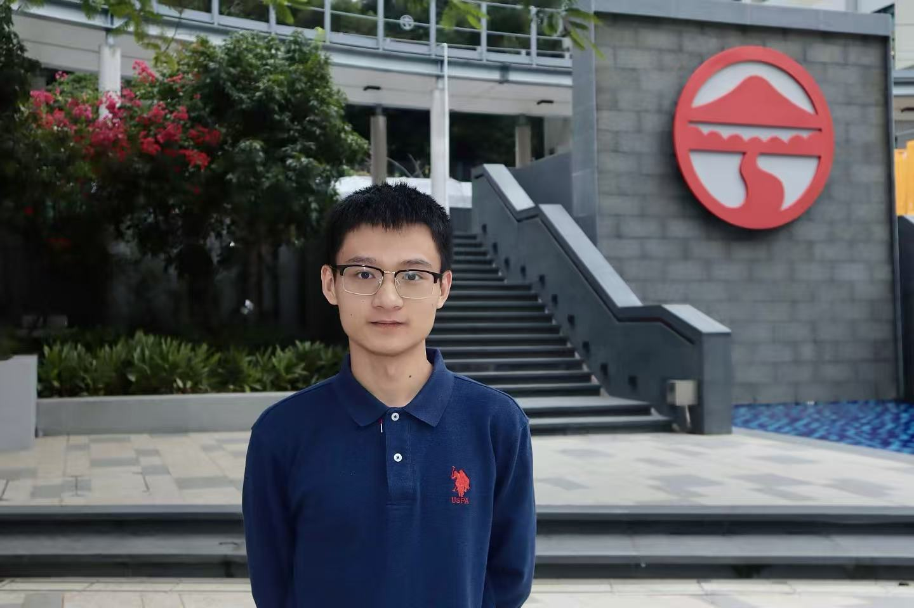

Research Interests
Individualism–Collectivism, Cultural Change, Quantitative Sociology, and Empirical Linguistics.

Research Assistant
B.A. (Hons) Translation student at Lingnan University, Hong Kong, working across empirical linguistics and quantitative social research.
Individualism–Collectivism, Cultural Change, Quantitative Sociology, and Empirical Linguistics.
Research Assistant at Lingnan University and Lab Assistant at the Comparative Culturology Lab.
B.A. (Hons) Translation, with minors in Economics and Political Science, Lingnan University.
Background
Training in translation, economics, political science, and quantitative social research.
I am a B.A. (Hons) Translation student in Cross-Cultural & Corporate Communication at Lingnan University, with minors in Economics and Political Science. My research interests centre on individualism–collectivism, cultural change, quantitative sociology, and empirical linguistics.
Since January 2025, I have worked as a Research Assistant in Lingnan University’s Department of Sociology and Social Policy under Assistant Professor Plamen Akaliyski, contributing to literature synthesis, dataset construction, data management, statistical analysis, and the Comparative Culturology Lab. I will undertake an exchange in the Department of Sociology at National Taiwan University from September 2026 to January 2027.
My work combines survey data, corpora, geospatial indicators, remote sensing, historical records, and statistical modelling. I am particularly interested in translating theoretical claims about culture and language into transparent, testable measures.
Current scholarship
Papers under review and active working papers. Author roles and collaborators reflect the latest available project records.
Under review at Journal of Quantitative Linguistics
Develops Zipfian indicators to quantify translational orientation across Chinese literary translations and tests whether lexical distributions encode systematic translation choices.
Under review at Atmospheric Environment: X
Integrates multi-source remote-sensing indicators to model the coupling between urban heat-island intensity and low-carbon construction across Sichuan Province.
Under review at Humanities and Social Sciences Communications
Reconstructs provincial GGDP/GDP trajectories for 2004–2024 and evaluates measurement persistence, rank reordering, and the political structure of policy winners and losers.
Tests ecological and developmental pathways to within-China variation in individualism–collectivism using subnational survey, climate, agriculture, and modernization data.
Models diachronic change in written Chinese with diffusion curves and dense time bins, replacing broad period labels with directly estimated trajectories.
Estimates practical benchmark ranges for Chinese Zipf exponents across linguistic units, registers, and estimation strategies, with model and sampling robustness checks.
Tests how endogenous lexical structure, source-language metadata, and Zipfian parameters shape translationese detectability in a large literary English corpus.
Examines whether the Crocus City Hall attack altered regional migration restrictions and labour-migration governance affecting Central Asian migrants in Russia.
Tests whether river-system access helps localize Cool Water Theory across inland Chinese regions and clarifies the role of hydrological access in ecological-developmental pathways.
Selected moments
A small collection from academic life, travel, and everyday observation.